Time it. Tonk it.
A cricket game for Android. Bat, bowl and work your way from school cricket to a Test cap.
Out 3 December
Pre-register and the game gives you the DAY ONE stumps when it comes out (reward terms). The iPhone version comes later.
About 10 MBPlays offlineNo subscriptionsMade by a one-person studio

Two ways to bat
Simple batting is three buttons. Leg side, off side, or block. Your timing decides where it goes, and Loft puts it in the air.
Advanced batting gives you a stick. Aim it at the gap, pick Defend or Loft, and press Play on time. Cheeky plays the sweep, the reverse sweep, the scoop or the ramp. Miss one against a spinner and the keeper has all day to take the bails off.
When you bowl, you pick pace, finger spin or wrist spin and aim at the pitch. Your bowler learns new deliveries as he gets better.
The marker shows the length
Before each ball a marker shows where it will pitch. Its colour tells you the length, and the colour-blind setting adds a shape for each one.
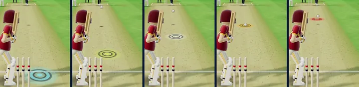
Pre-register on Google PlayOut 3 December
From school cricket to a Test cap
The Pro Career starts at 15. Play as a batter, a bowler, an all-rounder or a keeper. The selectors watch your form, and each level has to be earned.
-
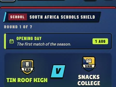
15School
Pick your school. Your first season is free.
-
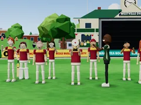
16Club
League cricket with your club, and a trophy to win.
-
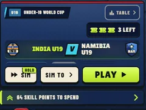
Under-19s
Youth ODIs, youth Tests and the Under-19 World Cup.
-
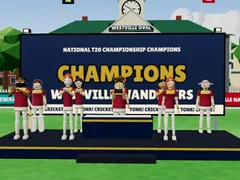
Domestic
First-class and T20 cricket for your province.
-
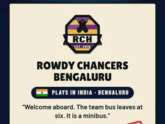
A side and franchises
Tour with the A side. Get signed by a franchise.
-
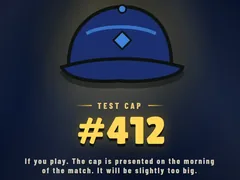
Test cap
Your country calls. The cap will be slightly too big.
Swipe along for the rest of the career.
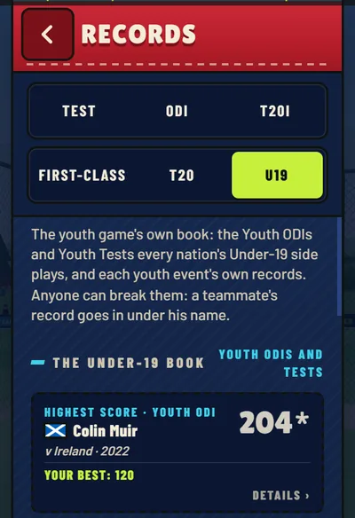
Records you can break
Every tournament keeps its own record book. The records are scores a good player could reach, so they can be beaten.
The book shows your own best beside the record. Break one and your name goes in. Tap it to see that match’s scorecard.
Pre-register on Google PlayOut 3 December

Or pick the team yourself
The Manager Career puts you in charge of a club, a province, a franchise or a national side. You choose the XI and the tactics.
- Set a field for each bowler, fielder by fielder.
- Agree wages and contracts, and bid at the franchise auction.
- Loan out fringe players and borrow cover for injuries.
- Build an academy and play friendlies against all-time XIs.
- Sim a match and watch the highlights, or play it yourself.
Your first season is free. After that the Manager Career is a one-time unlock.

T10 to five-day Tests
| T10 | 10 overs a side. |
|---|---|
| T20 | 20 overs a side, with powerplays. |
| ODI | 50 overs a side, with powerplays. |
| Test | Two innings each over up to five days, with lunch and tea. |
Matches have DRS, weather and a pitch that wears. Play in the day, under lights, or in a day/night Test with the pink ball. Tap the scoreboard for the field map, with every fielder named.
Other ways to play
- World Cup
- Pick a nation and try to win it.
- Pass & Play
- Two to eight friends on one phone, in a match or a tournament.
- Daily challenge
- A new one every day.
- Quick matches
- A quick chase or your own custom match. Six Smash, Super Overs and Bowl Them Out too.
- Nets
- Bat with nothing riding on it.
- Difficulty
- Gentle, Tidy, Fiery and Brutal.
Pre-register on Google PlayOut 3 December
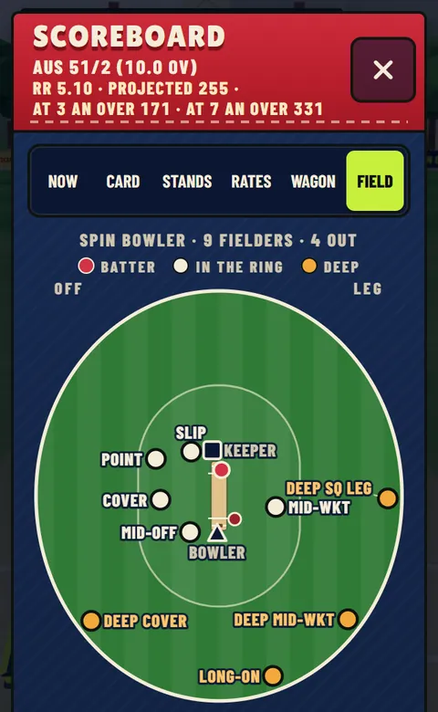

Earn coins, buy stumps
Your Pro Career sets you three missions a day, like scoring 25 runs or taking a catch. Missions pay coins, and coins buy new stumps for your matches. Gold, neon, laser, flame and a few more.
Stumps change how the wicket looks and nothing else. You can’t buy coins with money.
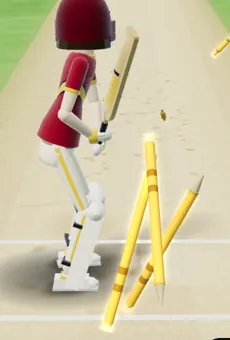
Gold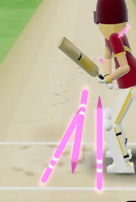
Neon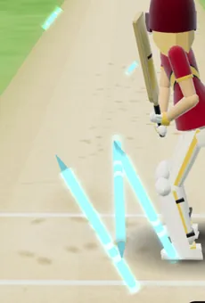
Laser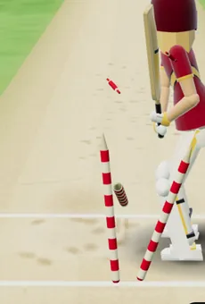
Hoops
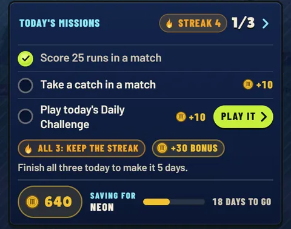
Pre-register on Google PlayOut 3 December
What it costs
- To start
- Free. Your first season, at school, costs nothing.
- Match tickets
- After school, each career match uses a ticket. You hold three (two on Gentle) and one comes back every hour, offline too. An advert you choose to watch gets you one sooner. Simming a match is always free.
- Adverts
- Long matches have a short drinks-break advert at the end of an over. Any other advert is one you chose to watch.
- The Full Game
- One purchase. No adverts and no tickets.
- Manager Career
- The first season is free. After that it’s a one-time unlock. The Bundle gets you the Full Game and the Manager Career together.
- Never
- No subscriptions. Coins aren’t for sale. Nothing you buy makes you hit harder or win more easily.
Prices depend on your country. Google Play shows yours before you buy.
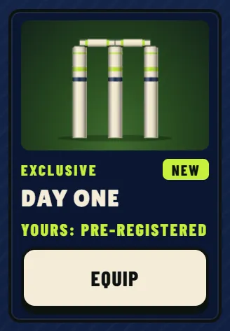
Pre-register for the DAY ONE stumps
The DAY ONE stumps are only for players who pre-register on Google Play. They’re free and they’re cosmetic. Open the game after it comes out on 3 December and they’ll be in your stump shop.